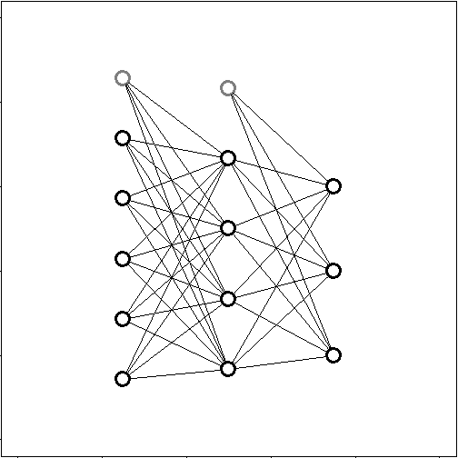

Flash intro to Neural Network
Antony Samuel B
Logistic Regression
- A logistic regression is used to classify between two outputs A and B or 0 and 1.
- Here we see a representation of a logistic regression with 3 inputs and a classification type ouput.

Multiclass logistic regression
- A multiclass logistic regression is used when we have to classify between multiple outputs.
- Here we see such a regression's representation with 4 inputs and 3 classification ouputs.

Neural Network
- A neural Network can be thought of stacked multiclass logistic regression.
- The below NN can be thought of as 2 stacked multiclass logistic regression, with the ouputs of the first serving as the inputs to the next.

Thanks
- If you liked this intro go through Andrew Ng's course in coursera.org.
- Thanks.